|
Примеры |
Top Previous Next |
|
Пример 1
Создадим набор классов, который охватит все возможные направления трафика в сети 192.168.12.0.
Для этого создадим сначала класс трафика, описывающего движение трафика между абонентами сети 192.168.12.0/24. В этом случае нет необходимости отдельно создавать правила для входящего и исходящего направлений, так как сеть источника и получателя одна, трафик одновременно будет и входящим, и исходящим. Нам не нужно, чтобы межабонентский трафик попадал в основную статистику, поэтому в свойствах класса флажок «Пометить и продолжить» не устанавливаем.
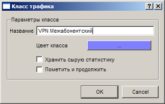 Создание класса трафика Добавим в этот класс составляющую. 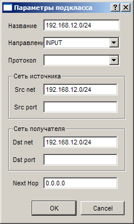 Составляющая, описывающая межабонентский трафик
Теперь создадим второй класс трафика «VPN Интернет» и добавим в него два подкласса, охватывающих трафик с сети 192.168.12.0/24 на сеть 0.0.0.0/0 в группе OUTPUT и с сети 0.0.0.0/0 на сеть 192.168.12.0/24 в группе INPUT. 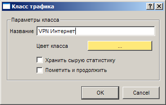 VPN интернет
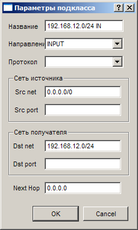 Входящая составляющая
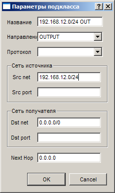 Исходящая составляющая.
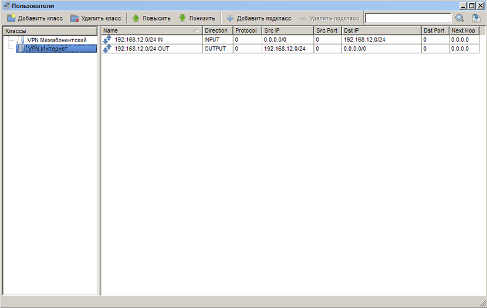 Результат Пример 2
Создадим набор классов для провайдера, использующего IPN тарифные планы для сети 192.168.1.0/24 и VPN тарифные планы для сети 10.10.1.0/24. Дополнительно мы будем отделять HTTP трафик для последующей тарификации отдельно от остального трафика и помечать ICQ трафик.
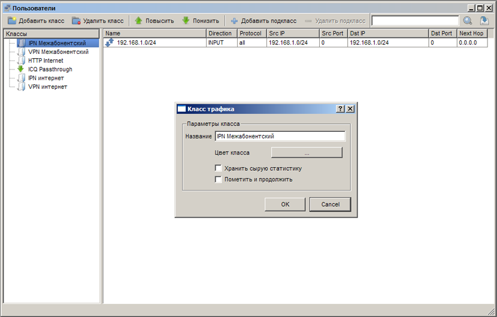 IPN Межабонентский
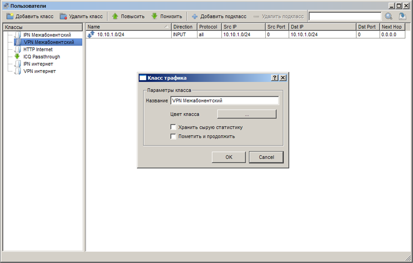 VPN Межабонентский
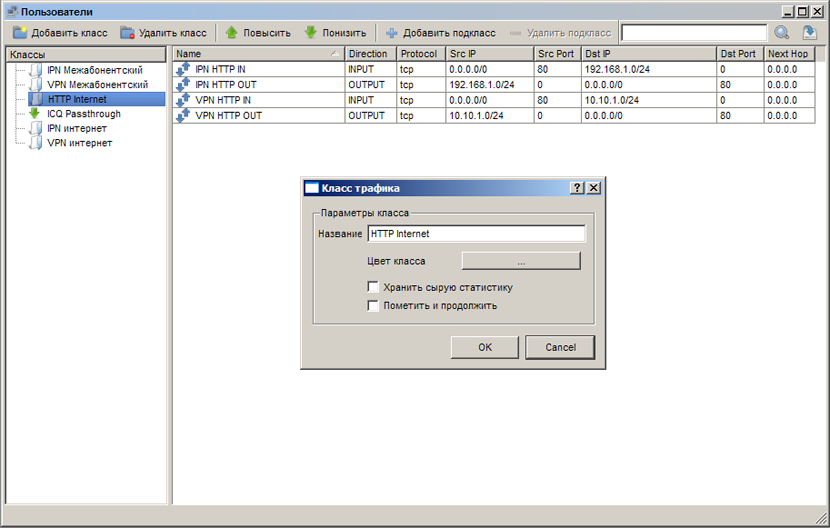 HTTP Internet
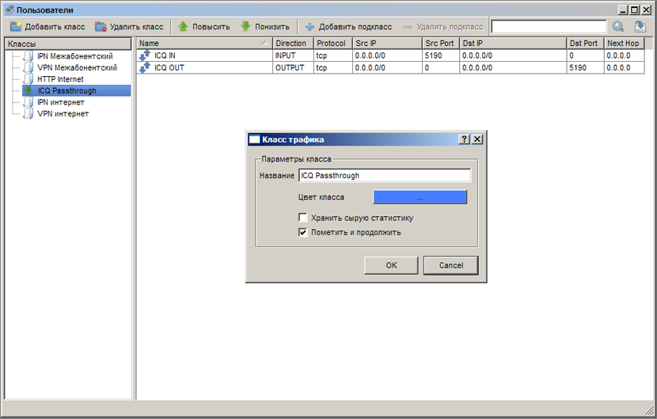 ICQ трафик
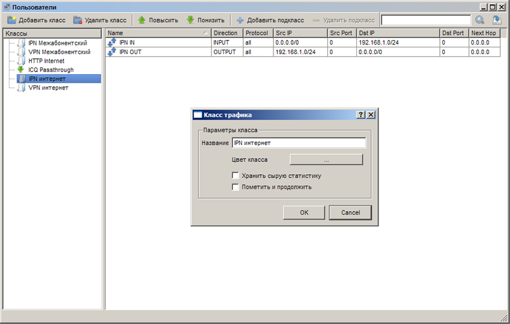 Трафик IPN абонентов
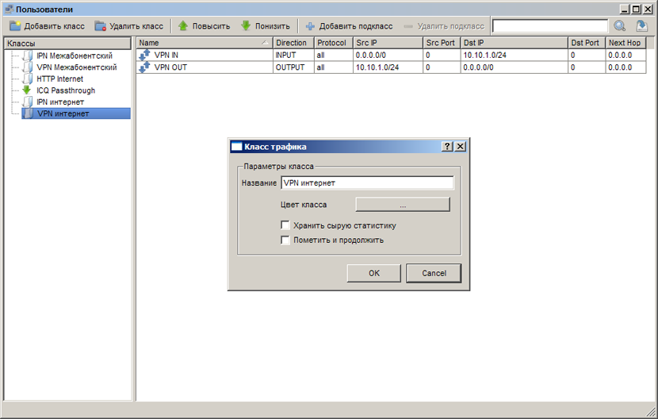 Трафик VPN абонентов
В итоге такой конфигурации классов межабонентский трафик останется в первых двух классах. Весь трафик, идущий с 80 и на 80 порты останется в классе HTTP Internet. В послеющем его можно будет тарифицировать отдельно от общего трафика. Класс, сописывающий ICQ трафик можно будет использовать для построения отчётов. Классы IPN интернет и VPN интернет позволят тарифицировать трафик, не вошедший в другие классы для IPN и VPN тарифных планов соответственно.
This help file was created with an unregistered evaluation copy of Help & Manual. © EC Software. All rights reserved. This message will not appear if you compile this help file with the registered version of Help & Manual. |